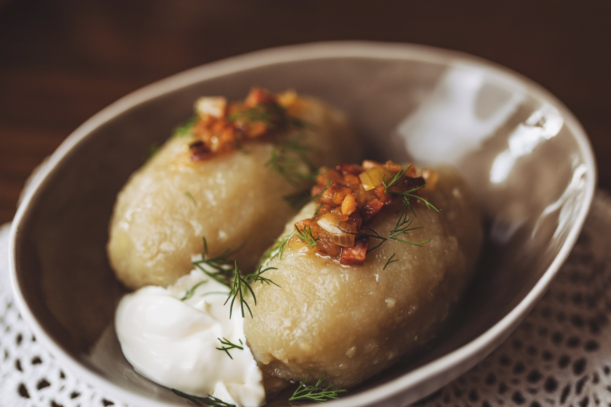

Cepelinai

Description
Lithuanian potato-meat dumplings are known as zeppelins or cepelinai because of their shape.
These hearty and rich dumplings take some time to make, but they are well worth the effort.
Don't be intimidated by the recipe as it has a few steps in order to make each component, including the filling, the dumpling, and the gravy.
The national dish of Lithuania, cepelinai are best served and eaten as soon as made.
The cooked dumplings are hard to store, and are best piping hot and covered with hot gravy.
Ingredients
For the Meat Filling:
- 1 pound ground pork, or an equal mix of pork, beef, and veal
- 1 medium onion, peeled and finely chopped
- 1 1/2 teaspoons kosher salt
- 1/4 teaspoon freshly ground black pepper
- 1 large egg, beaten
For the Dumplings:
- 1 tablespoon freshly squeezed lemon juice
- 8 large Idaho potatoes, peeled and finely grated, about 5 pounds
- 2 large Idaho or Russet potatoes, about 1 1/2 pounds, peeled, boiled, and riced
- 1 medium onion, finely grated
- 1 1/2 teaspoons kosher salt, more as needed
Steps
- In a large bowl, mix together ground meat, finely chopped onion, the salt, a few grinds of pepper, and the egg until well combined.
- Add the lemon juice to the raw grated potatoes so they don't turn brown.